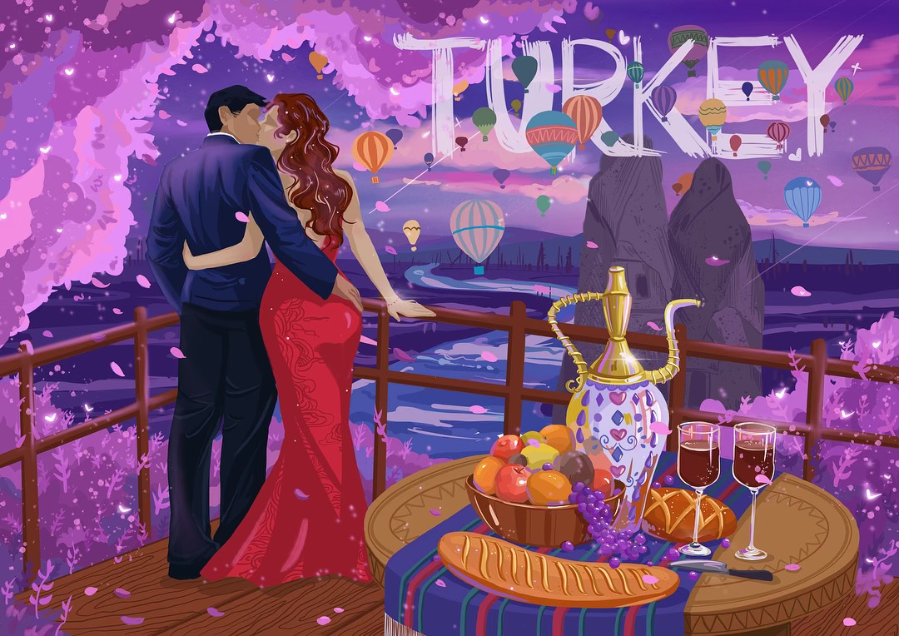

fantasy dream
Fantasy dream is a series of colorful, vivid, and lovely works that most represent my art styles. I think everyone has a colorful, fantastic, and passionate inside world that hide in their heart. That is their childhood.
When people are filled in their adult world, they are easily to forget the most original themselves. That little boy or little girl lived inside at their heart is the most innocent one that full of hope and curiosity about the world.
Fantasy Dream recall people’s memories about their childhood and make them face to the voice of their heart. Everything could be possible and everything is positive. It is a dream that makes people temporarily forget their identity and immersed in the new world.

